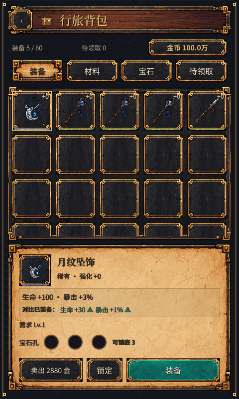
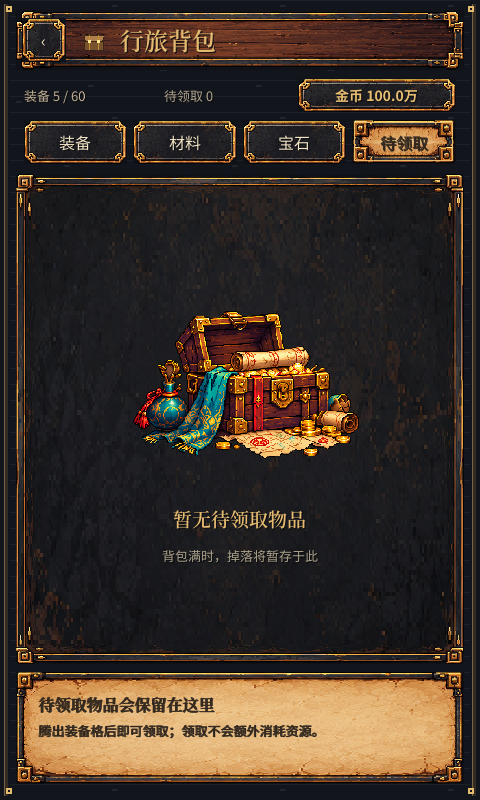
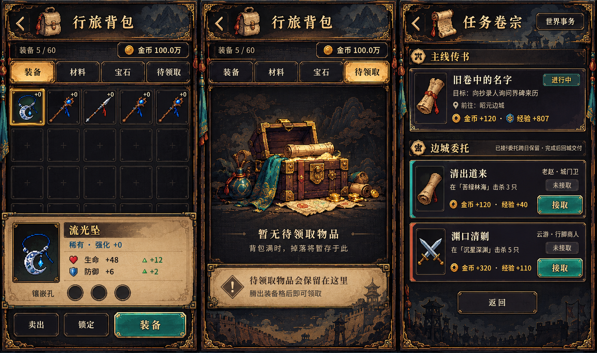
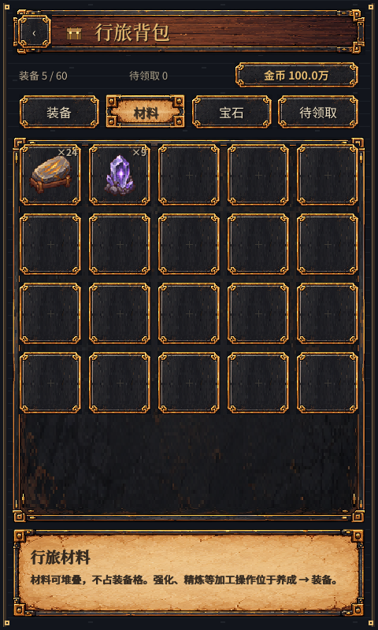
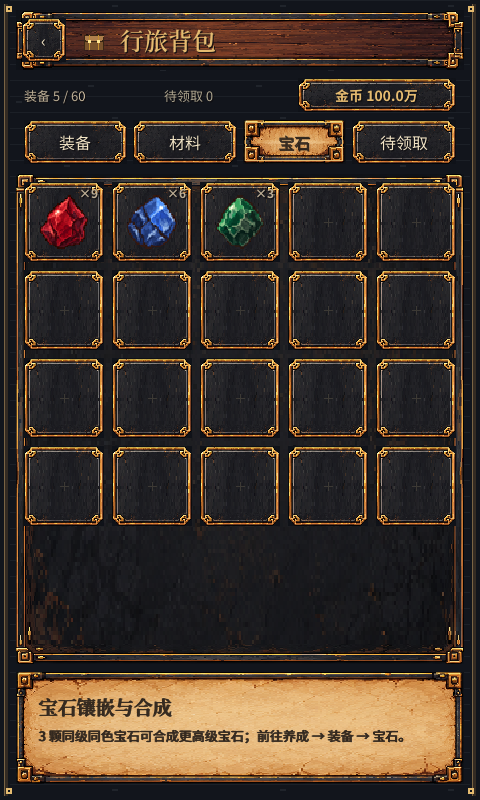
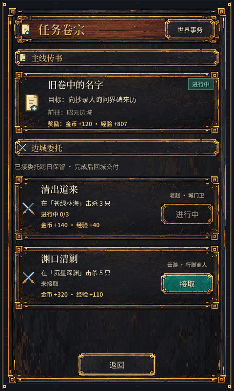
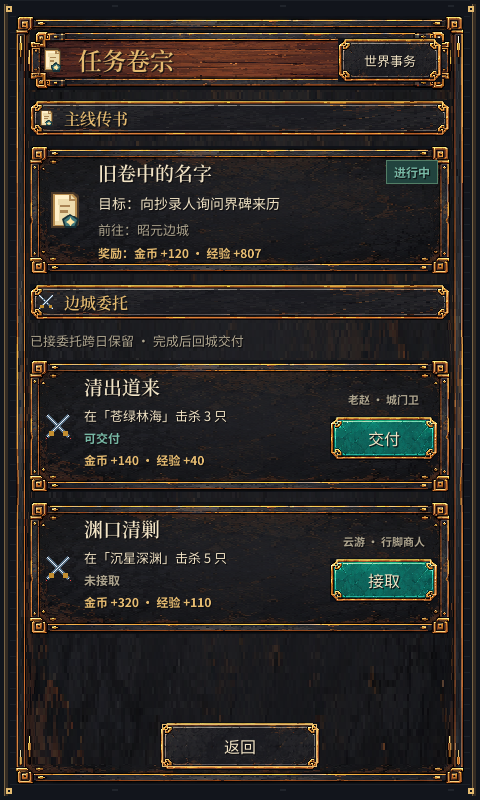

行旅界面 · 像素重构
深色铁木框 / 暖色纸面 / 青玉主按钮。下方为游戏实际运行截图。
行旅背包 · 选中装备
待领取 · 空状态
任务卷宗 查看统一设计参考稿

参考图的名称及数值仅为美术示意；实机界面读取游戏数据。
查看更多交互状态
材料
宝石
进行中
可交付
494 项界面功能与布局检查通过，委托逻辑回归通过。截图使用独立存档。测试退出时仍有资源释放提示，记录于测试日志。